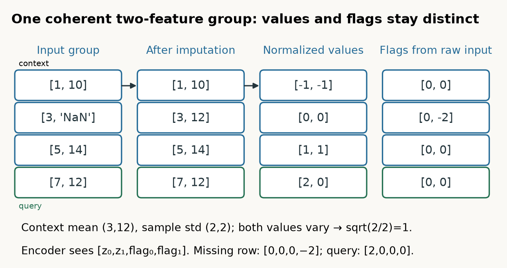
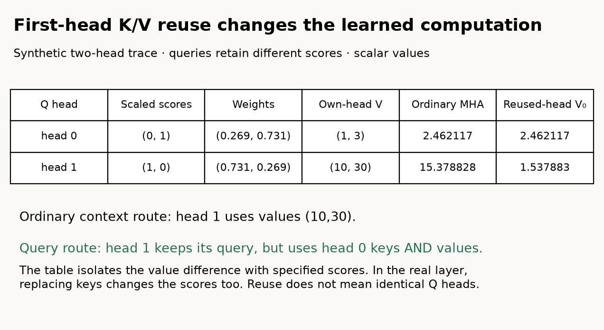
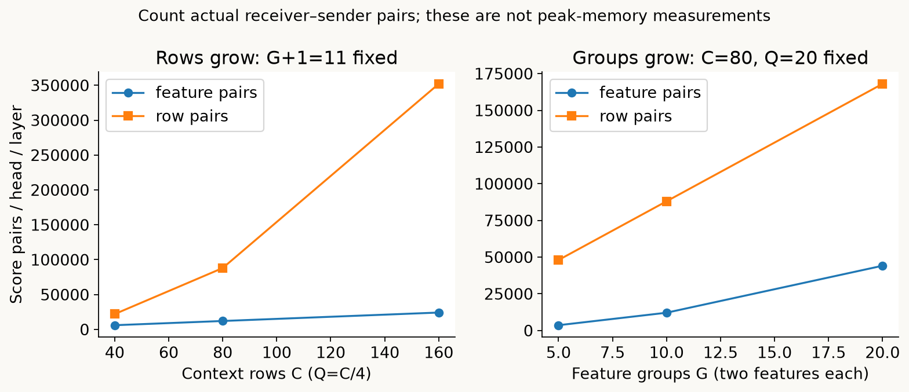
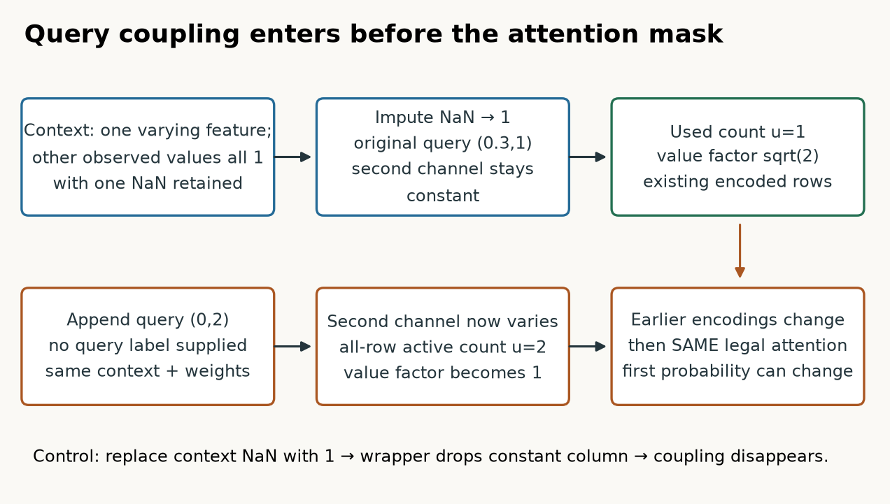
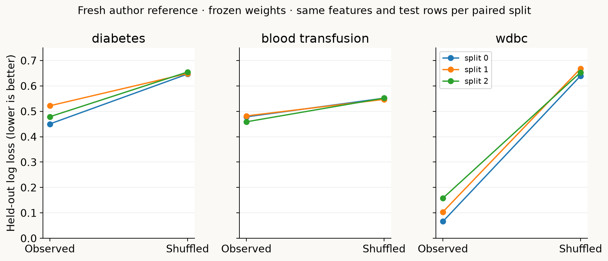

Year 2 · Quarter 3 · Lesson 064
Trace historical TabPFN v2 through a complete prediction
Retrieve before reading
The argument of this lesson
Keep the table structure visible while reasoning from context
v1 compressed each row before row attention; the prior explained what synthetic tasks teach the weights. v2 changes the computational route: feature-group and target tokens survive through alternating attention axes. The lesson follows how a query feature reaches its target state, then checks the surrounding preprocessing boundary that an attention mask alone cannot guarantee.
The skill: trace the learning algorithm inside one prediction¶
In plain terms. A normal network learns your task by changing its weights. TabPFN v2 keeps its weights frozen and instead reads your labeled rows as input, doing all the "learning" inside a single forward pass. This lesson follows one prediction from raw features to a class probability so you can see exactly where that reading happens.
A concrete contrast. A new table arrives with 400 labeled records and eight measured features. A conventional neural baseline starts with random parameters and uses those records to update its weights. Historical TabPFN v2 starts with already learned parameters and places the records inside its input. Its forward computation uses those records to infer the relationship needed for a new query. The expensive optimization happened earlier, across synthetic prediction problems. At application time the dataset changes the network's activations, without an optimizer changing its parameters.
Why this matters for the relational mission. That is a useful candidate baseline: a carefully flattened table can receive a strong predictor with little dataset-specific training. It also sets a clear limit. Attention between rows of a supplied table does not recover foreign keys, timestamp availability or entity relationships that were discarded during flattening. A better single-table inference engine makes the baseline harder to beat; it does not settle the relational thesis.
What you will be able to do. By the end, you should be able to reconstruct a query prediction from two-feature groups, target tokens, alternating attention axes, first-head key/value reuse and the output head. You should also diagnose a case where adding an unrelated query changes an earlier prediction even though the attention mask is correct. The companion lab implements every learned layer of the historical default classifier, loads the original weights and makes real predictions through five functions you complete.
Retrieve first. Without looking back: what distribution does the PFN cross-entropy objective approximate? Which variables differ between drawing a new synthetic task and drawing another row within a task? Why must a query's target stay out of its input? Write a sentence for each. The v2 architecture changes how evidence travels through the table; it does not remove these requirements from lessons 061–063.
Scope and source identity¶
Built with TabPFN · Prior Labs License.
Which model, exactly. This lesson concerns Hollmann et al.'s 2025 Nature TabPFN, commonly called v2. The executable target is the historical tabpfn==2.0.9 release with tabpfn-v2-classifier.ckpt, not a current default download. The checkpoint contains 7,244,554 parameters in 81 tensors. The lab uses all of them.
Which recipe, exactly. The complete numeric single-view recipe is deliberately simple: no added fingerprint, feature shuffling, class shuffling, external distribution transformation or outlier compression; temperature 0.9.
Scope check. The simple recipe is a supported configuration of the historical wrapper, not the paper's four-view classification default. The default wrapper is separately checked by capturing its actual four transformed tables, recomputing all network outputs through the visible model and reconstructing its final probabilities. That bridge checks the complete connection, including the outlier transform, but does not independently reimplement every default preprocessing algorithm. This distinction matters: a model implementation and a deployment recipe are different units of evidence.
Where to read the source. Read the main paper and Methods, especially "Details on the neural architecture," "Training details," "Inference details" and "Detailed evaluation protocol." The source inventory pins exact bytes, functions and supplemental tables. Historical release code remains the source of truth for implementation-specific details below.
What changed from a whole-row token?¶
In plain terms. v1 squashed each row into one vector before comparing rows. v2 keeps a row as several small tokens and lets the model mix information two ways: across the features inside a row, and across rows at the same position. The two kinds of mixing alternate.
The v1 baseline. In v1, a feature vector first becomes one learned vector for the whole row. After this compression, context attention compares rows. A single input projection must accommodate the feature positions and their relationships before context reasoning begins.
The v2 change. In v2, a row remains a sequence of feature-group tokens plus a target token. Within-row attention can relate its measured variables. Between-row attention can relate the same token position across the supplied dataset. The two kinds of mixing repeat.
Define the two words carefully. A token is a hidden vector attached to a position in that representation. A group here is two adjacent numeric features after preprocessing. Neither term means a database entity or a category value.
Worked example. Eight raw features produce four group tokens, then one target token. A default preprocessing view that duplicates columns or adds a fingerprint may produce more groups. You must count features after that view's transformations.
The symbols, once. Let B denote independent tables processed together; C the labeled context rows; Q the unlabeled query rows; N=C+Q their combined count; F the number of features reaching the network; g=2 features per group; G=ceil(F/g) feature groups; and D=192 hidden coordinates. The hidden table has shape B×N×(G+1)×D. The extra position is the target.
Worked example. With F=5, pad the last feature with zero, form three groups and append the target: there are four tokens per row. Padding creates a group slot, not a sixth observed measurement.
Two identities the network must preserve¶
Two constraints follow. First, the network must preserve the identity of a row while it groups its features. Second, it must preserve the identity of a group while it changes attention axes. A tensor can have the expected shape after an incorrect reshape. In the lab, entries 10*r+f let you detect that bug: row 1, features 0–2 become [10,11] and [12,0], not pieces borrowed from another row.
Model architecture: the complete historical classifier¶
See the whole solution
TabPFN v2: keep the feature axis alive through inference
Trace before reading: How does a query feature influence its target readout without becoming a sender to other rows?
Read every component and connection as text
- Context / query features: context-fitted numeric wrapper; B × (C+Q) × F. Connects to Two-feature group encoder.
- Context y / query missing: value + missingness channels; query flag distinguishes unknown. Connects to Target encoder.
- Two-feature group encoder: 2 values + 2 flags → 192; add projected group identity. Connects to 1 · Within each row.
- Target encoder: 2 channels → 192; append one target token. Connects to 1 · Within each row.
- 1 · Within each row: feature / target attention; residual + LayerNorm. Connects to 2 · At each token position.
- 2 · At each token position: context ↔ context; query ← context; query uses first-head K/V reuse. Connects to 3 · Token-wise FFN.
- 3 · Token-wise FFN: 192 → 768 → 192; GELU; residual + LayerNorm. Connects to Query target states → head.
- Query target states → head: 192 → 768 → 10; keep K classes; temperature → softmax → Q × K.
↔ On narrow screens, scroll horizontally to see all branches. The text route above reflows to your screen.
Pictured scope. Complete historical default classifier: 12 blocks, d=192, six heads, two-feature groups. Numeric single-view lab uses temperature0.9; historical wrapper variants remain separate.
{kind=link}
Trace question: how does a query's measured feature reach its target readout without giving any query a sending edge to another row?
The whole forward path, once. The diagram pictures the actual 12-layer, 192-wide checkpoint used in the lab. The forward path is: context-fitted wrapper processing; pair grouping and missing-value encoding; separate feature and target projections; random group identity addition; 12 distinct blocks; final query target states; and a 192→768→10 GELU head. Only the K active class coordinates are retained. Dividing these logits by temperature 0.9 and applying softmax produces one categorical distribution per query.
What one block does¶
Each block performs exactly three sublayers: feature attention → row attention → feed-forward network. Each sublayer has its own residual addition followed by LayerNorm.
The block's fixed facts. The block's feed-forward map is 192→768→192 with GELU and no biases. The LayerNorm has epsilon 1e−5 and no learned scale or shift. The final prediction head does have biases. The attention projections have six heads of width 32 and no projection biases. These are checkpoint facts fixed by the released weights.
Residual and norm, precisely. Residual addition means the incoming vector remains available beside the new attention or feed-forward update. LayerNorm then subtracts the mean over that token's D coordinates and divides by their population standard deviation, with epsilon inside the square root. It normalizes coordinates of one token, not a column over context rows. Confusing the two normalization operations gives incorrect information sharing and an incorrect function even when all tensor dimensions fit.
Scope check. Pretraining adds an objective outside this diagram: sample synthetic tasks, hide query targets, evaluate their negative log predicted probabilities, backpropagate through the model and update its shared weights. New-table inference supplies real context and queries to frozen weights. It performs no such optimizer step. Optional fine-tuning is a separate procedure; the live lab and author experiment do not perform it. The fixed checkpoint defines classification with at most ten output classes. The paper also introduces a regression model with a distributional head. That is a different checkpoint and output interpretation; applying a softmax to this classifier does not reproduce the regression or density-estimation experiments.
Encode values, missingness and the unknown target¶
The architecture tells us which objects interact. Encoding defines what those objects mean: observed zero, missing value and unknown target need distinct channels. Without this distinction, the later attention would mix ambiguous evidence.
In plain terms. Before any attention runs, each pair of features is turned into four numbers: two rescaled values and two flags saying whether each value was actually present. This is how the model tells "the value is zero" apart from "the value is missing."
The four channels. The feature encoder receives four scalar channels per group: two normalized values followed by two missingness indicators. It maps them linearly to 192 coordinates without a bias. A NaN contributes indicator −2, and an observed value contributes 0.
Scope check. The low-level release also assigns different flags to positive and negative infinity. The numeric wrapper in this lab rejects infinities, so those flags are not an advertised supported data-cleaning policy.
How values are normalized. Missing values are first replaced by the corresponding context mean. The resulting context values determine a sample mean μ and sample standard deviation s. The encoder then computes clip((x−μ)/(s+1e−20),−100,100). A missing value therefore usually enters as zero on the normalized-value channel while retaining its −2 flag. "Zero" and "missing" remain distinguishable. An entirely missing context column receives mean zero under the release's valid-count clamp; its indicator is still informative. Undefined sample variance at a single row is handled separately. The lab normally uses hundreds of context rows.

Worked feature trace. For one group, context values are (1,10), (3,NaN), (5,14) and the query is (7,12). The imputation means are (3,12). After imputation, the first column has sample standard deviation 2 and the second also has standard deviation 2. Their normalized context rows are (-1,-1), (0,0), (1,1); the query is (2,0). The second row's second flag remains −2. Both channels vary, so the group-size correction is sqrt(2/2)=1. The query's four scalar inputs are (2,0,0,0); the missing context row's inputs are (0,0,0,-2).
The active-feature correction. The active-feature correction multiplies a group's normalized values by sqrt(g/u), where u is its number of varying value channels, clamped to at least one. If only one of two channels carries variation, multiplying by sqrt(2) compensates for reduced input variance. This is a numerical convention learned with the checkpoint, not permission to substitute any convenient normalization. The historical uncached encoder determines u from all supplied rows. Keep that fact in mind for the counterexample later. Indicator channels are concatenated without this correction.
The target token is not an all-zero placeholder¶
In plain terms. The query's answer is unknown, but its target slot is not blank. The model fills it with a specific "unknown, given this context" code so later layers know where to write the prediction.
How the target is encoded. Context targets are encoded as ordered class indices. Query targets are absent from the public model signature: forward(x, y_context) cannot receive them. Internally the implementation appends NaNs, imputes them with the mean context label, then converts values to their rank among the distinct context labels. The target projection receives this rank and the missingness flag.
Worked example. For labels [0,0,1], the mean is 1/3. The unknown value's rank is the number of observed class values smaller than 1/3, namely 1. Its target input is therefore (1,−2). The observed class-1 input is (1,0). The missing flag separates them. With context labels [0,1,2], the mean is 1, and the unknown target input is again (1,−2). In general the rank depends on the observed context classes and mean; it is not always zero or a learned constant independent of context.
What it does and does not mean. This encoding communicates "unknown target with this context." It is not a claim that class 1 is the likely answer. Later layers combine that state with features and context evidence. The model has learned to interpret the two input channels jointly.
Group identities distinguish positions¶
Each group receives one random vector of length 48, projected by a learned affine 48→192 map and added to every row at that group position. The generator seed fixes these vectors for the call; target tokens do not receive that addition. Thus the second group's identity stays the same across all rows, but it is different from the first group's identity.
Scope check. These group identity vectors help distinguish positions with similar marginal statistics. They are not semantic column-name embeddings; the network has not been told that a column means glucose or account age. Moving raw columns changes grouping, within-group order and positional assignments. A single pass is therefore not exactly invariant to feature permutations. The paper's inference ensemble averages predictions from differently ordered views to reduce this sensitivity; finite averaging is not a proof of invariance.
Alternate two attention axes, with two different row routes¶
The tokens now retain both row and feature-group identity. Within-row attention connects measured features to the target token; across-row attention brings in labeled-context evidence at each position. Repetition lets the two kinds of information combine.
In plain terms. Attention is a weighted lookup: each receiver reads a weighted blend of the senders' values. v2 runs this lookup on two axes in turn — once within a row across its groups, once across rows at a fixed position — and it treats context rows and query rows differently on the second axis.
The attention operation. Attention begins with learned projections into queries q, keys k and values v. A receiver's projected query scores potential senders' keys by a dot product, scaled by 1/sqrt(d), where d=32 is one head's width. Softmax across sender positions turns the scores into nonnegative weights summing to one. The output is their weighted sum of sender values. Context rows also form attention query vectors, so a query vector inside attention is not necessarily an unlabeled dataset row.
Worked example. For a tiny two-sender fixture, scaled scores (0,1) give weights (0.268941,0.731059). If their values are (1,0) and (0,2), the mixed vector is (0.268941,1.462117). The output need not be a class probability; it is an internal value mixture.
Scope check. The released CPU implementation constructs its scale as a float32 scalar even when model tensors are float64. Matching that small rounding choice makes the stringent source comparison meaningful.

Feature attention. Feature attention treats each row as a separate sequence of G+1 tokens. A query target token can read that query row's own feature groups. A context feature group can read its row's observed target. All rows undergo this computation independently. No other row is involved in this sublayer.
Row attention. Row attention transposes the row and token-position axes. At each fixed group or target position, the labeled context forms the only sending memory. Context receivers read context senders with ordinary six-head attention. Query receivers also read context, but they use the first head's context keys and values for every head. Their six query projections remain distinct. This is the release's special multi-query route: six Q heads, one reused K/V head for query receivers; six Q/K/V heads for context receivers.
Why the asymmetry? A cached context needs to retain only one head's key/value pair at each token position for future query rows. But the context-to-context computation can still use all six learned memory views while creating its representations. Replacing both routes with one generic full-head attention operation changes the pretrained computation. Replacing all six query projections with the first query projection also changes it.
Follow one prediction through two blocks¶
After feature attention in block 1, a query target state can depend on all feature groups in its own row. Context target states can depend on their features and observed labels. Row attention lets that query target state read those context target states. The target token is consequently a learned readout location conditioned on both the query and the labeled examples.
At a query feature position, row attention can instead retrieve context information at the same group position. Block 2's feature attention can move that information into the query target token. Repetition lets within-row relationships and context comparisons interact at increasing depth. This is why explaining only a row-attention mask omits the path from feature evidence to the target readout.
Scope check. No row-attention sublayer uses query rows as senders. Consequently, with encoded tokens fixed, perturbing another query cannot influence the original query or the context states through these blocks. A model that ignores its context can also satisfy that structural property. We therefore need sensitivity and predictive checks in addition to an isolation test: changing legal context labels should be able to matter, and those labels should help predict held-out outcomes in measured examples.
Count the work before quoting a speedup¶
In plain terms. "Quadratic attention" is too coarse a label here. Each axis scales differently, so we count receiver–sender pairs on each axis before making any speed claim.
The two counts. For one table and one head, feature attention creates N(G+1)² receiver–sender pairs. Row attention creates (G+1)[C²+QC] = (G+1)NC pairs. These formulas count interactions, not bytes. Multiplying by six heads and twelve layers estimates total score work, ignoring projection and feed-forward costs. Grouping F features in pairs changes G; adding a default fingerprint or duplicated transformed features can change it again.
Worked example. For C=80, Q=20 and F=20, G=10. The feature count is 100×11²=12,100; the row count is 11×100×80=88,000 per head per layer. Doubling feature groups approximately quadruples feature attention and doubles row attention. Doubling context and query rows together doubles feature attention and quadruples row attention. These counts explain the two bottlenecks more precisely than an unqualified "quadratic attention" label.

Scope check. Efficient attention kernels can avoid storing the full score matrix. Thus quadratic interaction counts do not imply quadratic peak memory in a particular optimized implementation. Conversely, the explicit attention multiplication in this teaching implementation does allocate score tensors. It is intentionally readable and uncached; it cannot substantiate the paper's optimized memory, GPU throughput or cached-query latency claims. A context cache stores layer-specific state computed from fixed context and weights. Building the cache costs work; storing it costs memory. A repeated-query timer should distinguish preprocessing, cache construction and warm query calls. Changing labels, feature order, preprocessing state or weights can invalidate the cache. The historical uncached encoder's all-row active-feature count also means cached and uncached calls need not implement the same preprocessing in edge cases. We test that boundary instead of assuming cache equality from the intended design.
A correct mask can coexist with query-dependent predictions¶
The row mask excludes query senders from attention. That does not automatically exclude query influence in earlier numerical preprocessing. The counterexample traces the whole function to distinguish a correct local mask from global query isolation.
In plain terms. The attention mask correctly forbids one query from sending to another. Yet adding a second query can still nudge the first query's answer — because the preprocessing that runs before attention looks at all rows. This section builds that exact counterexample.
Predict before the result. All observed values of a context feature equal 1, but one context entry is missing. One other feature varies. The existing query is (0.3,1). We append (0,2) as a second query, with no label. Should the first probability change? Decide which statement you are predicting: isolation of the Transformer after encoding, or isolation of the complete fitted wrapper.

Why the constant column survives. The historical wrapper's constant-feature selection compares raw context values by equality. Because NaN is unequal to itself, the partly missing feature survives this selection. The network then replaces the missing value by 1. Now that channel is constant across the imputed context and original query. Together with the other varying channel, the group's used count is u=1. Its normalized values receive factor sqrt(2).
Why the second query changes the first. Appending a query with value 2 makes the second normalized channel vary. The all-row count becomes u=2 and the factor becomes 1. That changes the original row's encoded values and context representations before the attention mask is applied. There is no forbidden attention edge. The source counterexample pinpoints the mismatch between a local graph guarantee and the complete prediction API.
The measured effect. Our visible CPU float32 implementation changes the original class-1 probability from approximately 0.805940 to 0.791114, a difference of 0.014825.
Scope check. The checker also compares this fixture with the original float32 wrapper. An independent original-release audit with forced float64 inference gives a difference of 0.011651; its preprocessing arithmetic differs at a degenerate zero-variance boundary, so these are separately declared precision paths. An actual default four-view float64 wrapper also changes the probability, by 0.007824. These values demonstrate existence, not a population failure rate.
Two controls that sharpen the diagnosis. With the missing entry replaced by an observed 1, wrapper constant removal drops that feature and the added query leaves the first prediction unchanged within numerical tolerance. With encoded tokens fixed, altering a later query also leaves earlier block outputs unchanged. The former tests the proposed preprocessing cause; the latter tests the legal attention graph. The original source's cached fixture stays unchanged under the added query, but its baseline differs from the uncached one. That is not permission to advertise exact cached/uncached equivalence.
Repair exercise, not a silent checkpoint change. If you counted active values only on context after imputation, would the complete operator become query-independent on this fixture? Yes for this mechanism, but you would have changed the historical computation. Compare both behaviors in a named experiment before deciding whether to use a patched variant. In this lesson, source fidelity is preserved and the boundary is exposed.
From synthetic training to the paper's empirical claim¶
In plain terms. The training objective, in the ideal limit, pushes the network to reproduce the prior's own answer. That is a statement about a distribution, not a promise of accuracy on your data.
The objective and its optimum. The training objective averages the negative log probability of hidden targets across generated tasks. For a fixed observable context D and query x, let p(y|x,D) be the prior-induced predictive distribution and qθ the network. Conditional expected cross-entropy equals H(p)+KL(p||qθ): the first term does not depend on θ, so its population optimum is qθ=p wherever the prior assigns support. Finite capacity, finite optimization and mismatch between synthetic and real tasks prevent this identity from becoming a universal accuracy theorem.
What the v2 prior samples. The paper's v2 prior uses random causal graphs with vector-valued nodes and diverse edge mappings, including nonlinear networks, categorical mappings and tree mechanisms. It also varies root sampling and postprocessing such as missingness. These are part of the distribution of tasks the architecture is trained to solve. They do not make a query prediction a causal effect estimate. Observational conditioning and intervention remain different questions.
Scope check — training scale and what is not reproduced. The Methods reports roughly two million training steps, 64 datasets per batch and about 130 million generated datasets per final model, with context sizes sampled up to 2,048 and 128 hidden-target samples. It also describes feature-count sampling and a table-cell cap. The main text's "around 100 million" is a coarser summary, not a contradictory second run. The synthetic generator code was not released with the Nature models. This lab therefore cannot honestly present fresh training from the released package as full training reproduction. The exact pretrained checkpoint is usable; its complete original task stream is not recovered here.
What a default inference view changes¶
A view is a transformed presentation of the same context/query task. In release 2.0.9, the classifier alternates a quantile-based recipe with a recipe that treats the inputs as numeric without an external distribution transform.
What the quantile recipe adds. The quantile recipe appends the original features beside transformed ones: a column can therefore be present twice in different coordinates. It also appends components from a fitted singular-value decomposition (SVD), which expresses joint feature variation along linear directions, and uses shuffled ordinal codes for selected common categories. These operations change the number and meaning of groups reaching the network; they do not create new independent observations.
Scope check. A salted row-byte hash supplies the release's fingerprint feature, with rehashing to distinguish duplicate training rows. This is more specific than the paper's description of a random normal sample identifier. Likewise, the release's outlier encoder estimates bounds from context and compresses tails logarithmically; it does not delete rows or discard extreme cells. Group identity vectors inside the network remain a separate mechanism from this extra fingerprint column. The default bridge captures the output of these source transformations before feeding it through the live model, so the comparison reflects the executed historical recipe (the exact transform), independent of prose labels such as "quantile" or "outlier removal."
Read the benchmark at the correct unit¶
What the paper measured. The main evaluation uses 29 classification and 28 regression datasets satisfying its stated size, feature and class limits, ten repetitions of 90/10 splits, and tuning through five-fold cross-validation at fixed time budgets. The paper normalizes performance within dataset before aggregation.
Scope check — the speed headline has a denominator. The paper's "2.8 seconds versus four hours" classification result is an average fit-and-predict comparison on that protocol and hardware, including a GPU for TabPFN. It is not the latency of every future query, a CPU guarantee, or a claim that offline pretraining took seconds.
How views are combined. The default classifier averages four inference views; the regression default uses eight. Shuffling class labels requires undoing that permutation on output coordinates. The historical classifier normally averages probabilities, not logits: softmax each aligned view at temperature 0.9, then average. Since softmax is nonlinear, swapping these operations defines another predictor. Post-hoc ensembling adds a further selection procedure with held-out data; it is different from averaging four fixed views.
Scope check. Read Supplementary Tables 1–4 for raw per-dataset scores and Tables 5–6 for development datasets. Development choices can use real datasets even when gradient pretraining is synthetic. "Synthetic-only pretraining" does not mean no real data informed architecture or inference defaults.
New local evidence: do the labels supply useful information?¶
After identifying the forward function and its boundaries, test whether supplied labels actually change useful predictions. The label intervention examines one information source while keeping the complete pretrained network fixed.
In plain terms. We run a simple, honest test: keep everything fixed and scramble only the context labels. If the frozen model is genuinely reading the labels, its held-out loss should get worse when the labels are made meaningless.
Predict before inspecting the plot. Keep the checkpoint, context features, query features, split, class counts and temperature fixed. Randomly permute only the context labels. Should query log loss improve or worsen? Would the result prove that attention recovered a correct causal graph? Explain your expectation before running.
The panel. The author panel performs fresh visible-model inference on every row of diabetes, blood transfusion and Wisconsin diagnostic breast cancer, with three stratified 50/50 split seeds per dataset. WDBC uses sklearn's 569×30 UCI copy; it is not claimed to reconstruct an official OpenML task split. Each split has observed and shuffled-label conditions, evaluated on exactly the same held-out targets. The shuffled condition preserves label counts but destroys the feature–label association within the context. It is an intervention on inputs to a frozen model, not a newly trained competing method.

The measured numbers. The observed-label arm has lower log loss in all nine measured pairs. Across split seeds, mean observed/shuffled losses are approximately 0.4835/0.6501 for diabetes, 0.4729/0.5502 for blood transfusion and 0.1092/0.6540 for WDBC. The figure shows every paired split, so differences are not hidden by averaging.
Scope check. Variation over three overlapping splits is not a confidence interval over new datasets. These selected numeric datasets and the one-view recipe cannot establish the original benchmark's average advantage over tuned competitors.
What each result supports. The intervention supports the narrower claim that this pretrained computation uses informative context-label relationships on these tasks. The query-coupling counterexample supports a different claim: whole-wrapper isolation fails on a constructed boundary despite a correct attention graph. Both are useful results. High predictive performance does not make implementation boundaries disappear; one counterexample does not estimate average predictive harm.
Paper-to-code and evidence map¶
Each row links a paper or source element to the visible lab operation that realizes it and to the evidence and its limit.
| Paper or source element | Visible lab operation | Evidence and limit |
|---|---|---|
| Methods: feature-group tokenization | group_features, encode_groups, TabPFNv2.forward |
Actual default two-feature groups and all copied encoder weights |
| Target missingness and class flattening | encode_targets, impute_with_flags |
Context-only label interface; numerical unknown-target fixture |
| Feature and row attention | PackedAttention, row_attention, V2Block |
All 12 layer outputs and 81 parameter gradients checked against release |
| Residual/norm/MLP/head | postnorm_update, V2Block, TabPFNv2 |
Complete copied-weight forward, not only one operator |
| Inference configuration | predict_numeric |
Five whole-wrapper cases match the explicitly simplified released recipe |
| Default four-view path | Source worker plus live model reconstruction | Every model output recomputed; peripheral default preprocessing is provided release code |
| Useful learned context inference | run_experiment |
Fresh real-data predictions, split IDs, labels, logits and metrics saved |
| Whole-wrapper information boundary | CHECK and live counterexample | Measured query coupling with finite-column and fixed-token controls |
| Original synthetic pretraining and full benchmark | Reproduction contract | NOT_RUN; local empirical comparison INCOMPARABLE |
Scope check. The source checker obtains full float64 logit agreement within 2e−10 and input/all-parameter gradient agreement within declared tolerances. It also verifies complete numeric wrapper probabilities for binary, multiclass, constant, missing and extreme-value fixtures. The default four-view bridge's maximum probability difference is below 1e−6 on its fixture. These checks establish computational agreement on tested inputs; they do not prove universal equivalence across all categorical preprocessing, caching, devices or optimized kernels.
Run, explain, and transfer¶
The lab places the complete visible model beside the explanation, then asks you to complete grouping, target encoding, scaled attention, the two row-attention routes and residual normalization. Each operation is called by your actual checkpoint prediction. The author plot is reference evidence; your kernel creates a fresh run with its own configuration, implementation fingerprint, source checks, counterexample and interpretation.
What the EXIT must report. Your EXIT must report observed and shuffled losses, the counterexample's two probabilities, why the mask is still correct, and which original-paper claims remain untested. Editing a helper, model method, function default, configuration or dependency after measurement invalidates the submission until you rerun. An old saved author result is not evidence that your present kernel is correct.
Teach-back. For a teach-back, explain the route from one query feature to its target output, including both attention axes and the distinct context/query head behavior. Then explain how another query can affect that output before the first attention layer. Finally, state one reason a flattened relational benchmark could still require temporal leakage controls despite using this pretrained model. Ask the teacher to check your explanation or help trace a failing CHECK; do not treat an executed notebook as demonstrated mastery.